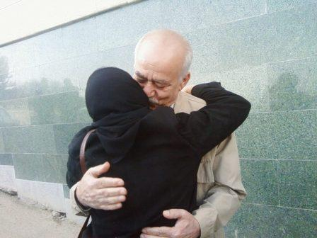
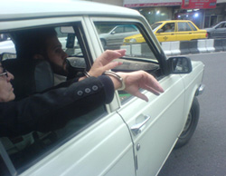

|
|
|
Browsing
Contact Us |
Campaigners |
Face to Face |
Tribune |
Interview |
News |
On the Web |
One Million |
Report
Farsi | Français | German | Italian | Spanish | العربية Also in this section
|

Khadijeh Moghaddam Released After Nine Days in DetentionTuesday 8 April 2008 Change for Equality: Khadijeh Moghaddam member of the Mother’s Committee of the One Million Signatures Campaign, and a member of Mothers for Peace, was released on the afternoon of Wednesday April 16, after spending nine days in detention. She was greeted by her family and friends, as well as her colleagues in the One Million Signatures Campaign.
Moghaddam was arrested last week after security police forcibly entered her home. She spent seven days in solitary confinement at Vozara detention center. Originally a bail amount of 100 million tomans (roughtly $110,000) was issued for her release. But on Tuesday April 15th, this amount was reduced to a third party guarantee, after which she was transferred to Evin prison.
 Moghaddam was originally supposed to be released on April 15th, after her third party guarantor completed all the necessary court documents for her release. Her friends and family members, as well as members of the Campaign, spent the night of April 15th in front of Evin Prison, hoping for her release. Family members had been informed by Khadijeh Moghaddam herself that she had been transferred to Evin prison, when she called home to inform them of her whereabouts. After waiting until 10pm in front of Evin prison, her friends and family finally gave up and returned home, only to start their official inquiries anew the next day. On Wednesday April 16th, upon inquiries, Moghaddam’s family members were told by court officials that the order for her release was not issued in time. As such, she was transferred to Evin’s public ward, where she spent one night and her release was pushed back to April 16th. In repeated interrogations sessions, the special court investigator of the security branch of the Revolutionary Courts, charged Moghaddam with actions against national security, disruption of public opinion, and propaganda against the state, through the convening of gatherings related to the Campaign in her private home. While it is customary to transfer individuals for whom a temporary arrest order has been issued to Evin’s public ward, Khadijeh Moghaddam spent seven days in temporary custody, under very difficult circumstances in Vozara Detention Center. During this time, she was deprived of access to her lawyers or visits with her family members. On Sunday of this same week a group of women’s rights activists, including members of the One Million Signatures Campaign, visited with Khadijeh Moghaddam’s family. During this visit, Moghaddam’s family and friends emphasized the illegal nature of her arrest and expressed their solidarity for Moghaddam and her activities in support of women’s rights, and the One Million Signatures Campaign. Interview with Husband of Imprisoned Activist, Khadijeh Moghaddam: "You Should Kiss Not Cuff Her Hands" Change for Equality: April 12, 2008: On Wednesday April 9, 2008, Khadijeh Moghaddam’s husband went to the Revolutionary Courts to follow-up on the case of his wife, but returned without any positive result. The following is a short interview conducted with Dr. Khosrowshahi, Khadijeh Moghaddam’s husband. Q: Dr. Khosrowshahi why do you think Khadijeh Moghaddam was arrested? A: This is not the first time that my wife has been arrested. They had summoned her from the security police on several occasions and she complied with the summons and went for interrogation. She is a women’s rights activist, a member of the mothers committee of the Campaign, a member of Mothers for Peace, an environmental activist, and founder of several of women’s cooperatives for female heads of households, which engage in women’s empowerment. She was present in many activities designed to reconstruct Bam after the earthquake, with a focus on improving the condition of life for women. Every time they arrested a member of the Campaign, my wife, along with others in the Mother’s Committee of the Campaign worked tirelessly to ensure their release. Just a few days ago, on the occasion of the Iranian New Year, along with Ms. Ebadi, she visited the families of imprisoned students and workers as well as the family of Zahra Baniyaghoub [killed while in detention in Hamedan]. She has dedicated her entire life to the quest for equality, and peace. Truly, instead of handcuffs, they should kiss the hands of this woman. Q: What has your wife been interrogated about? When I saw her yesterday, Khadijeh explained that she was interrogated in relation to the visits and gatherings in our home with members of the Mother’s Committee of the Campaign and the Mothers for Peace, which she hosted. They asked her to name the persons who regularly visited with her in her home. My wife found this line of questioning to be unethical and as such did not provide a response. Additionally, it seems that they asked her why she had visited the family of Mr. Osanloo [imprisoned labor leader]. She responded by saying that Mr. Osanloo’s mother is a friend of hers, and that it is very natural for her to go their home on the occasion of the Iranian New Year. Additionally, she responded that she views defending civil society activists to be her duty. Q: Mr. Khosrowshahi, what was the result of your queries at the Revolutionary Court in relation to your wife’s case? A: I went to the Revolutionary Court today, and after speaking to the investigative judge in charge of my wife’s case, I asked how I could arrange for a visit with my wife. He told me that I had to go to the Security Police in Eshrat Abad, as they had arrested my wife. So, I went to the Security Police in Eshrat Abad, and was told that since the temporary arrest order was issued by the investigative judge at the Revolutionary Courts, they could not facilitate a visit with my wife. So, I went back to the Security Branch of the Revolutionary Courts. Finally, Mr. Sobhani, the Investigative Judge in charge of my wife’s case, issued a letter for the women’s section of Vozara detention center, allowing me to visit with my wife. Afterwards, I went to Vozara Detention center where my wife is being held, but they referred me back to the Security Police at Eshrat Abad. There I was finally provided with a sealed letter to take to the Vozara detention center, where I was allowed to visit briefly with my wife. Q: How did your wife describe her condition in the detention center? A: Khadijeh has repeatedly objected to the manner in which she was arrested, the refusal of the arresting officers to show her an arrest warrant, the issuance of a heavy bail amount for her release, her transfer to Vozara detention center, where it is customary to hold those accused of "moral corruption" and the poor conditions at Vozara detention center. She is currently being held in solitary confinement at the detention center. Thank you Dr. Khosrowshahi for this interview. Khadijeh Moghaddam Member of Campaign and Mother’s Committee Arrested Change for Equality: April 8, 2008; On the morning of April 8th, security police forcibly entered the home of Khadijeh Moghaddam, women’s rights activist and member of the One Million Signatures Campaign and arrested her. Khadijeh Moghaddam who is a member of the Mother’s Committee of the Campaign was transferred to Eshrat Abad Security Police, where she was interrogated for several hours, and then transferred to the Revolutionary Courts, where she was interrogated by the Mr. Sobhani the Investigative Judge in charge of her case and charged. A temporary arrest order was issued and a bail amount of 100 Million Tomans (roughly $110,000) was set as a condition for her release. Moghaddam was then transferred to Vozara Detention Center. Khadijeh Moghaddam’s friends and family members had an opportunity to visit with her while she awaited the processing of her arrest order. During this time, Khadijeh spoke of the poor treatment she received from the Security Police officers who had come to her home to arrest her. “They rang the bell to our apartment at 11:00 am. I was home alone and speaking on the phone with my sister. I was still wearing my pajamas. I looked through the peep hole and saw that there was a woman behind the door. I opened the door slightly. The woman announced that she was a police officer. I asked her for identification and a court order to enter my home. But instead of presenting identification, the woman and two men, pushed the door open and entered my home forcibly. They entered with such force that I was unable to resist. Apparently they had entered our building through the parking garage! My sister, who was still on the phone, had heard my exchange with the intruders, and she quickly came to our home. The Security Police treated me in a despicable manner and after 20 minutes of arguing with them and objecting to their treatment of me, they finally agreed to show me their court order. They told me that they had come to our house on 5 different occasions over the past month, but that I had not been home. They claimed this, despite the fact that I had been home for the past couple of months, because my husband has been ill and I have caring for him. I told them that until I have the chance to speak to the prosecutor I would not leave with them. I was yelling so that the neighbors could hear that they were taking me from my home by force. Finally they allowed me to make a call.”
 Forum posts:3 |